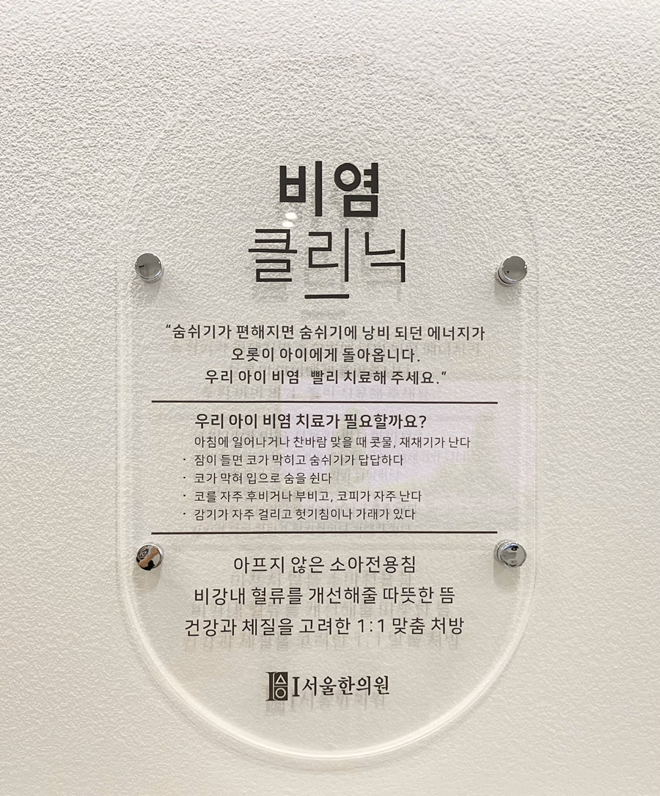

성장·학습·비염 클리닉
성장기 아이의 몸과 마음, 호흡 흐름을 함께 확인합니다.
소아 진료 흐름
키 성장, 학습 집중력, 반복되는 비염 증상은 수면, 자세, 체질, 생활 습관과 함께 살펴야 합니다.
성장 클리닉비염 클리닉
세부 안내
성장 클리닉

성장 속도, 체형, 수면, 식습관을 함께 살피는 성장 상담입니다.
[상세 보기]
학습 클리닉
집중력, 시험 긴장, 두통과 자세 불편을 함께 확인합니다.
[상세 보기]
비염 클리닉

코막힘, 구호흡, 재채기 등 호흡기 불편을 살피는 진료입니다.
[상세 보기]